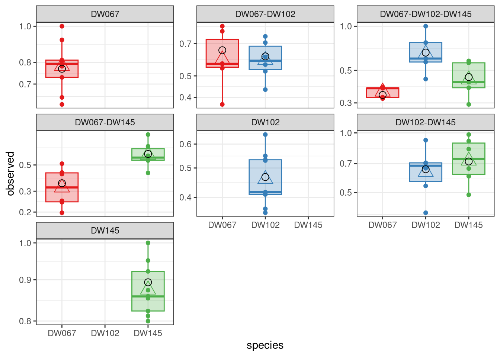

source("skwara_et_al_2022.R")GLV and experimental data — Hands on tutorial
Data
For our explorations, we are going to use recent data from Ishizawa and colleagues, which you can find here:
H. Ishizawa, Y. Tashiro, D. Inoue, M. Ike, H. Futamata. Learning beyond-pairwise interactions enables the bottom–up prediction of microbial community structure PNAS 121 (7) e2312396121 (2024).
The Authors inoculated duckweed (lemna minor) with synthetic bacterial communities formed by all possible combinations of seven strains. To this end, they cultured the infected duckweed in flasks for 10 days. At the end of the experiment, they plated the communities on agar plates containing antibiotics that would allow the growth only of a particular strain. In this way, they were able to measure the final density of each of the seven strains in each of the \(2^7 - 1 = 127\) possible communities, and conducted each experiment in replicate. The full data set reports the outcome of 692 separate experiments!
More modestly, here we are going to focus on a smaller pool of three strains taken from the seven available. We therefore have \(7\) possible communities, ranging from a single strain growing in isolation to the three strains growing together.
Here’s the full table:
| DW067 | DW102 | DW145 |
|---|---|---|
| 0.8 | ||
| 0.812 | ||
| 0.858 | ||
| 0.874 | ||
| 0.854 | ||
| 0.951 | ||
| 0.823 | ||
| 0.922 | ||
| 1 | ||
| 0.529 | ||
| 0.356 | ||
| 0.532 | ||
| 0.409 | ||
| 0.416 | ||
| 0.548 | ||
| 0.645 | ||
| 0.41 | ||
| 0.367 | ||
| 0.663 | 0.604 | |
| 0.703 | 0.909 | |
| 0.395 | 0.661 | |
| 0.54 | 0.487 | |
| 0.919 | 0.981 | |
| 0.707 | 0.828 | |
| 0.729 | ||
| 0.781 | ||
| 0.811 | ||
| 1 | ||
| 0.811 | ||
| 0.793 | ||
| 0.617 | ||
| 0.919 | ||
| 0.645 | ||
| 0.513 | 0.719 | |
| 0.419 | 0.428 | |
| 0.432 | 0.546 | |
| 0.197 | 0.598 | |
| 0.249 | 0.904 | |
| 0.242 | 0.558 | |
| 0.541 | 0.563 | |
| 0.568 | 0.755 | |
| 0.371 | 0.707 | |
| 0.566 | 0.524 | |
| 0.839 | 0.433 | |
| 0.796 | 0.609 | |
| 0.328 | 1 | 0.416 |
| 0.321 | 0.436 | 0.58 |
| 0.378 | 0.57 | 0.381 |
| 0.386 | 0.602 | 0.563 |
| 0.379 | 0.774 | 0.293 |
We can therefore associated each measurement with a) the strain being measured, \(i\); b) the community in which \(i\) was grown, \(k\); and c) the (biological) replicate experiment, \(r\).
Loading the code
We are going to use the code accompanying the paper
- Skwara, A., Lemos‐Costa, P., Miller, Z.R. and Allesina, S., 2023. Modelling ecological communities when composition is manipulated experimentally. Methods in Ecology and Evolution, 14(2), pp.696-707.
which you can find here
https://github.com/StefanoAllesina/skwara_et_al_2022/
we have slightly massaged the code for this tutorial.
To load the code in R change to the directory where you have stored the tutorial, and source this code:
Sum of squares
First, we are going to use all the data to find a matrix \(B\) that best encodes the density of the populations. To this end, we try to minimize the SSQ
\[ SSQ(B) = \sum_r \sum_k \sum_i \left(\tilde{x}^{(k,r)}_i - x^{(k)}_i \right)^2 \]
This can be accomplished by calling:
full_SSQ <- run_model(
datafile = "Ishizawa_3_strains.csv", # csv file containing the data to be fit
model = "full", # estimate B allowing each coefficient to take the best value
goalf = "SSQ", # minimize Sum of Squared Deviations
pars = NULL, # start from Identity matrix
skipEM = TRUE, # go directly to numerical optimization
plot_results = TRUE # plot the results
)`mutate_if()` ignored the following grouping variables:
• Column `comm`[1] "numerical search"
[1] 1.289597
[1] 1.289597
[1] 1.289597
[1] 1.289597
[1] 1.289597
[1] 1.289597
[1] 1.289597
[1] 1.289597
[1] 1.289597
[1] 1.289597
References and further readings
The backbone of the statistical model can be found in numerous articles, which converged to the same solution starting from different angles:
Xiao, Y., Angulo, M. T., Friedman, J., Waldor, M. K., Weiss, S. T., & Liu, Y.-Y. (2017). Mapping the ecological networks of microbial communities. Nature Communications, 8(1), 1–12.
Fort, H. (2018). On predicting species yields in multispecies communities: Quantifying the accuracy of the linear Lotka-Volterra generalized model. Ecological Modelling, 387, 154–162.
Maynard, D. S., Miller, Z. R., & Allesina, S. (2020). Predicting coexistence in experimental ecological communities. Nature Ecology & Evolution, 4(1), 91–100.
Ansari, A. F., Reddy, Y., Raut, J., & Dixit, N. M. (2021). An efficient and scalable top-down method for predicting structures of microbial communities. Nature Computational Science, 1(9), 619–628.
Davis, J.D., Olivença, D.V., Brown, S.P. and Voit, E.O., (2022). Methods of quantifying interactions among populations using Lotka-Volterra models. Frontiers in Systems Biology, 2, p.1021897.
For the tutorial, we are going to closely follow:
- Skwara, A., Lemos‐Costa, P., Miller, Z.R. and Allesina, S., 2023. Modelling ecological communities when composition is manipulated experimentally. Methods in Ecology and Evolution, 14(2), pp.696-707.
The same method can be extended to provide a simple test for phylogenetic effects on competition/growth:
- Lemos‐Costa, P., Miller, Z.R. and Allesina, S., 2024. Phylogeny structures species’ interactions in experimental ecological communities. Ecology Letters, 27(8), p.e14490.